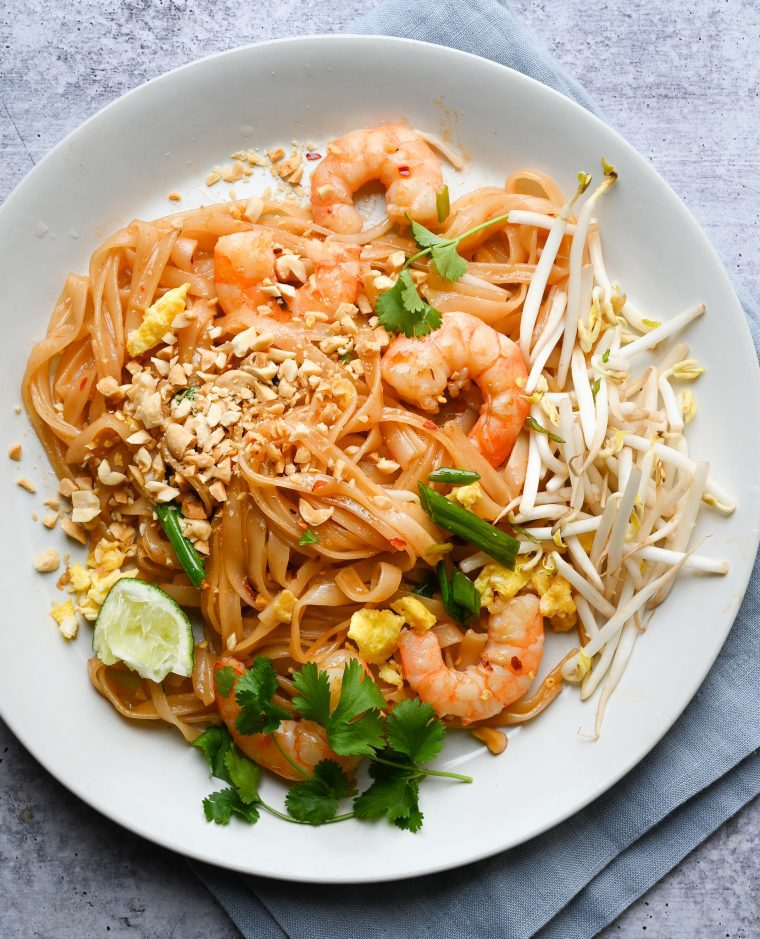

Farne's pad thai
This is a Pad Thai recipe that
truly stacks up to great Thai restaurants yet is totally
doable for every home cook with just a trip to your every day grocery
store.

Ingerdients
- 125g (half a 250g pack) rice noodles
- 3 tbsp lime juice about 2 limes
- ½ tsp cayenne pepper
- 2 tsp light muscovado sugar
- 2 tbsp fish sauce (nam pla)
- 2 tbsp vegetable oil
-
200g cooked and peeled tiger prawn, tails left on
- 4 spring onions, sliced
- 140g beansprout
- 25g salted peanut, finely chopped
- a small handful of coriander leaves
- 1 or 2 lime, cut into wedges
- sweet chilli sauce
Steps
-
Put the noodles in a large heatproof bowl, pour boiling water over
them and leave for 4 minutes, then drain and refresh under cold
running water.
-
Put the lime juice, cayenne, sugar and fish sauce in a bowl and mix
well. Have all the other ingredients ready by the cooker.
-
Heat the oil and fry the prawns until warmed through. Add the spring
onions and noodles and toss around. Tip in the lime juice mixture,
then stir in the beansprouts and half the peanuts and coriander. Cook
for 1 minute until everything is heated through.
-
Pile into a large dish, scatter with the rest of the peanuts and
coriander, and serve with lime wedges and sweet chilli sauce.
Back